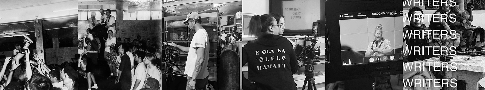

10 Discussion Questions on The Communist Manifesto
1. The Communist League, of which Karl Marx and Frederick Engels were a part, was first called League of the Just. How is socialism or communism related to justice?
2. What is the word for “class” in your language (for example, Japanese: 階級, Thai: ชนชั้น, Hawaiian: papa)? What do these words mean, and how are they applied? Are they important in thinking about power in society?
3. What does it mean, as Marx suggests, for the economy to exist at the base of the entire power structure? (base - superstructure)
4. For Marx, power is based on its “mode of production” (since the “mode” allows power to reproduce itself). How would you describe the current mode(s) of production in today’s world?
5. Marx argues that liberal capitalism opposes socialism, in part, because it doesn’t believe in full equality for women (see p. 488)? Does Capitalism obstruct gender equality?.
6.Marx suggests that Capitalism produces an “epidemic of overproduction.” Recently, Tokyo University professor Kohei Saito argued that Marx is arguing for the need to slow down. Is he right, and how and why might we apply such a “degrowth” plan?
7. I am always struck by the quote on p. 476, where Marx states that in the Capitalist system “all that is solid melts into air, all that is holy is profaned”. What does he mean and do you agree with this statement?.
8. How might we apply the following quote to other political theories? How might it apply to today?
>[T]he Communists everywhere support every revolutionary movement against the existing social and political order of things. In all these movements they bring to the front, as the leading question in each, the property question, no matter what its degree of development at that time. (498)
9. Marx says that under Capitalism, people become “appendage of the machine” (479). Do you agree, and how might Socialism build a more organic society?.
10. On p. 488, Marx summarizes the key points of the manifesto (see the final section of the handout). Advocate for, or critique, one of these points.